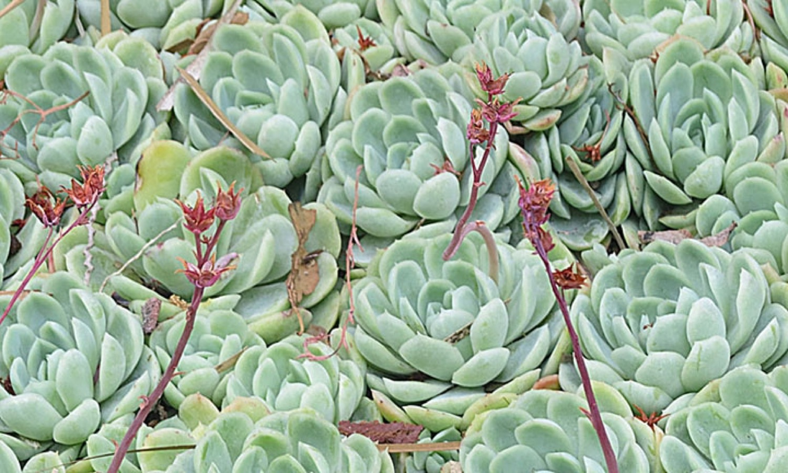

ЗК / 07 — О компании
Природа ближе.
«Зелёная комната» — магазин комнатных растений для дома и рабочего пространства. Мы помогаем находить растения, которые дополняют интерьер и становятся частью повседневной жизни.
Узнать больше
Зелёная комната / Наша философия
Растения с характером.
Мы верим, что растения делают пространство уютнее, интереснее и живее. Даже одно небольшое растение способно преобразить привычную обстановку.
В нашей коллекции представлены декоративно-лиственные растения, суккуленты и цветущие виды. При выборе мы обращаем внимание не только на внешний вид, но и на особенности ухода, освещения и условия содержания.
Наша цель — сделать выбор комнатных растений понятным и удобным. В каталоге можно познакомиться с разными видами, сравнить их особенности и найти подходящий вариант.
Прозрачность / Источники
Фотографии коллекции
Для иллюстрации растений используются фотографии из открытых источников. Мы уважаем труд авторов и указываем авторство, условия лицензирования и ссылки на оригинальные публикации.
Изображения могут быть адаптированы для отображения на сайте: изменены размеры, кадрирование или формат файлов.
- Фикус эластика · Margaret Shear · CC BY-SA 4.0 · Источник
- Нефролепис · David Eickhoff · CC BY 2.0 · Источник
- Эпипремнум · Dell Enecks (Pitt County) · CC BY 4.0 · Источник
- Алоэ вера · Mokkie · CC BY-SA 3.0 · Источник
- Эхеверия · Dick Culbert · CC BY 2.0 · Источник
- Крассула · Aniol · CC BY-SA 4.0 · Источник
- Антуриум · Yercaud-elango · CC BY-SA 4.0 · Источник
- Узамбарская фиалка · Hope Duckworth · CC BY 4.0 · Источник
- Спатифиллум · Cindy Christian · CC BY 4.0 · Источник

Правовая информация
Лицензия и авторские права
© 2026 «Зелёная комната».
Оригинальные текстовые материалы сайта распространяются на условиях международной лицензии Creative Commons Attribution 4.0 International (CC BY 4.0) .
Все права защищены.
Указанная лицензия не распространяется на фотографии третьих лиц, товарные знаки, логотипы и другие материалы, права на которые принадлежат соответствующим правообладателям.
Фотографии растений используются на условиях лицензий, указанных в разделе «Фотографии коллекции». При повторном использовании изображений необходимо соблюдать условия лицензии каждого конкретного снимка.
Название «Зелёная комната» и фирменные элементы оформления не предоставляются для использования по лицензии CC BY 4.0.